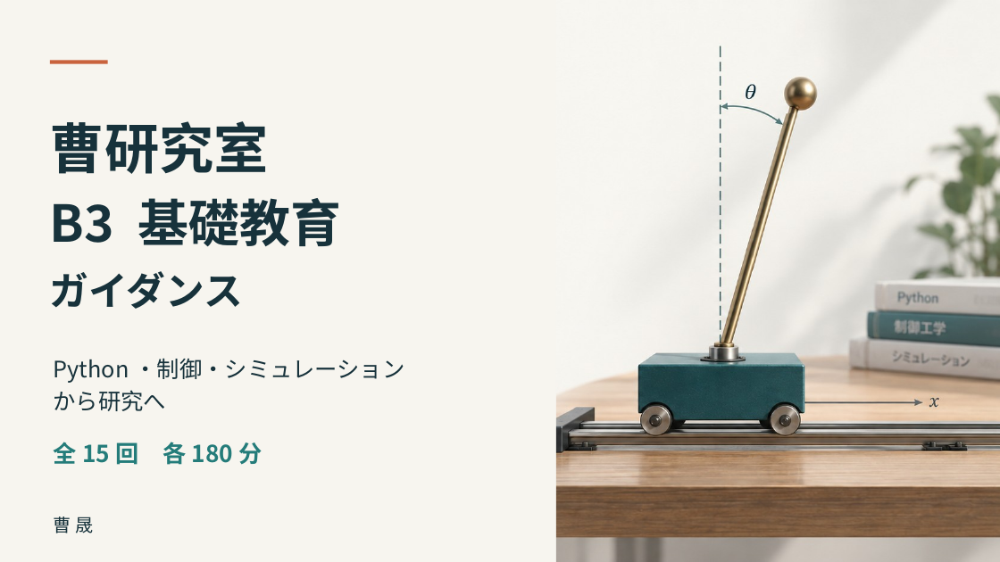

ColabとPython
動かす・変える・確かめる
ガイダンスと研究室紹介からスタート。プログラムの大まかな意味を読み、計算結果と単位を自分で確かめます。
- 変数・if・for・関数
- NumPy・ベクトル・行列
- 内積・固有値の体験
- AIのコードを診断
内容・時間配分・参考資料
ガイダンス・研究紹介 → Colab操作 → Pythonの基本 → NumPy・行列 → AIコードの診断 → 固有値の体験 → 記録・提出。
| 0–20分 | ガイダンス・研究室紹介・目標 |
|---|---|
| 20–75分 | Colab操作とPythonの基本 |
| 75–85分 | 休憩・保存 |
| 85–130分 | NumPy・内積・行列積 |
| 130–165分 | AIコードの診断・固有値の体験 |
| 165–180分 | 説明・保存・提出 |
提出：自分の回答と実行結果を記入したNotebook。
別冊：Pythonと行列の書き方を調べる参考本です。第1回ですべて終える必要はありません。

PPT：2026.09.24 v2 / Notebook：2026.09.25